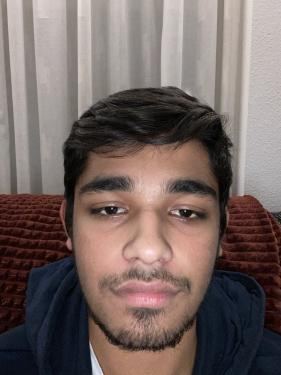
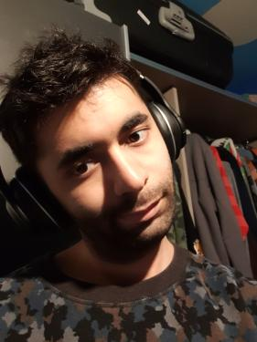
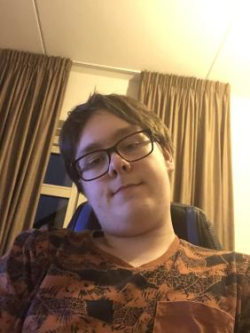
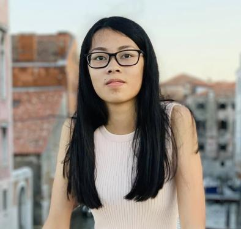

Ik ben Hamid Ghanbari en ik ben 31 jaar oud. Mijn hobby’s zijn gamen,Classic muziek en film . Ik koos de opleiding omdat ik vroeger had geprobeerd te programmeren en ik wou daar meer over weten.
Ik ben Jay Dwarka en ik ben 16 jaar oud. Mijn hobby’s zijn gamen, muziek maken en filmpjes maken. Ik koos de opleiding omdat ik vroeger had geprobeerd te programmeren en ik wou daar meer over weten.
Ik ben Mansoor Mateen. Ik benen 21.Hobbies zijn gamen , muziek maken en tekenen. Ik koos voor de Software_Developer opleiding omdat ik zelfs programeren leuk en interessant vond
Ik ben Sander Borgman en ik ben 17 jaar oud. Mijn hobby is gamen en ik ben de opleiding software-Developer aan het leren om later videogames te kunnen maken
Ik ben May Hoang, ik ben 17 jaar oud. Mijn hobbies zijn gamen, tekenen en bakken. Ik koos voor software developer omdat het me erg leuk leek.